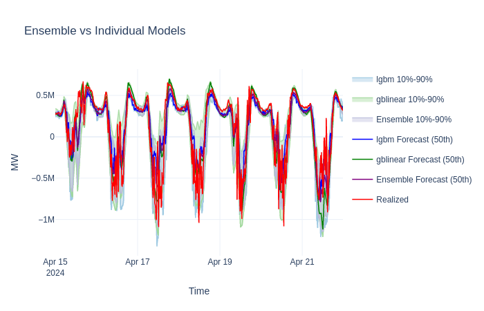
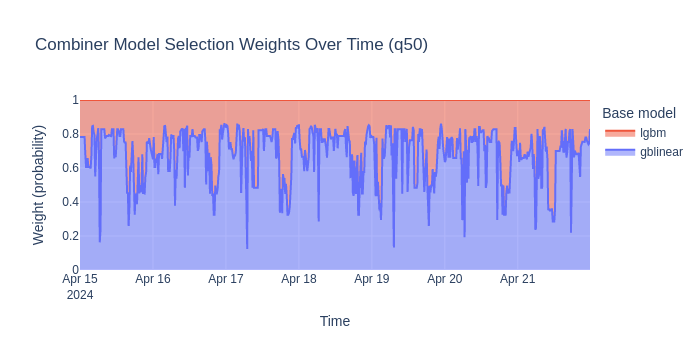

Ensemble Forecasting#
OpenSTEF supports ensemble models that combine multiple base forecasters into a single prediction. A combiner learns which base model performs best under different conditions and weights their outputs accordingly.
What you’ll learn:
Why combining tree-based and linear models improves forecasts
How to configure and train an ensemble with
EnsembleForecastingWorkflowConfigHow to inspect combiner behavior (which model does it prefer?)
How ensemble predictions compare to individual base models
Note
This tutorial uses a small dataset for fast execution.
See examples/benchmarks/ for production-scale ensemble runs.
Key API references:
EnsembleForecastingWorkflowConfig
· create_ensemble_forecasting_workflow
· ForecastingWorkflowConfig
Why ensemble forecasting?#
Different model types have complementary strengths:
Model |
Strengths |
Weaknesses |
|---|---|---|
Tree-based (LightGBM, XGBoost) |
Captures complex non-linear patterns, handles feature interactions well |
Poor extrapolation — struggles with unseen peaks, seasonal shifts, or values outside training range |
Linear (GBLinear) |
Extrapolates naturally to new ranges, captures seasonal/solar trends |
Cannot model non-linear interactions |
In energy forecasting, load peaks during extreme weather or seasonal transitions often fall outside the training distribution. A tree-based model underestimates these peaks while a linear model captures the trend but misses finer patterns. An ensemble combines both: the combiner learns when each model is more reliable and weights accordingly.
How it works#
An ensemble workflow has three layers:
Common preprocessing — shared feature engineering (lags, holidays, cyclic features, scaling) applied once to raw data.
Base forecasters — multiple models each trained on the preprocessed data, with optional per-model transforms (e.g. GBLinear gets fewer lags to avoid collinearity).
Combiner — learns to aggregate base forecaster outputs. Two modes:
Learned weights: a classifier predicts which base model will perform best for each sample, then weights predictions accordingly.
Stacking: a meta-regressor trained on base model outputs per quantile.
Load the dataset#
from datetime import datetime, timedelta
from openstef_core.testing import load_liander_dataset
from openstef_core.types import LeadTime, Q
dataset = load_liander_dataset()
train_start = datetime.fromisoformat("2024-03-01T00:00:00Z")
train_end = train_start + timedelta(days=45)
forecast_end = train_end + timedelta(days=7)
train_dataset = dataset.filter_by_range(start=train_start, end=train_end)
predict_dataset = dataset.filter_by_range(
start=train_end - timedelta(days=14),
end=forecast_end,
)
print(f"Training: {train_dataset.data.shape[0]:,} rows")
print(f"Predict: {predict_dataset.data.shape[0]:,} rows")
Training: 4,320 rows
Predict: 2,016 rows
Configure the ensemble#
EnsembleForecastingWorkflowConfig sets up the full pipeline.
Key parameters:
base_models— which forecasters to includeensemble_type— how to combine them ("learned_weights"or"stacking")combiner_model— the algorithm used by the combiner
from openstef_meta.presets import EnsembleForecastingWorkflowConfig, create_ensemble_forecasting_workflow
ensemble_config = EnsembleForecastingWorkflowConfig(
model_id="ensemble_demo",
# Ensemble architecture
ensemble_type="learned_weights",
base_models=["lgbm", "gblinear"],
combiner_model="lgbm",
# Forecast settings
horizons=[LeadTime.from_string("PT36H")],
quantiles=[Q(0.5), Q(0.1), Q(0.9)],
# Data columns
target_column="load",
temperature_column="temperature_2m",
relative_humidity_column="relative_humidity_2m",
wind_speed_column="wind_speed_10m",
radiation_column="shortwave_radiation",
pressure_column="surface_pressure",
# Disable MLFlow for tutorial
mlflow_storage=None,
)
print(f"Base models: {list(ensemble_config.base_models)}")
print(f"Ensemble type: {ensemble_config.ensemble_type}")
print(f"Combiner: {ensemble_config.combiner_model}")
Base models: ['lgbm', 'gblinear']
Ensemble type: learned_weights
Combiner: lgbm
Create and train the ensemble workflow#
workflow = create_ensemble_forecasting_workflow(ensemble_config)
fit_result = workflow.fit(train_dataset)
print("Ensemble trained successfully")
print("\nPer-model validation R2:")
for name, child_result in fit_result.component_fit_results.items():
r2 = child_result.metrics_val.get_metric(quantile=Q(0.5), metric_name="R2")
print(f" {name:12s}: {r2:.4f}")
# Get combiner (ensemble-level) R2
ensemble_r2 = fit_result.metrics_val.get_metric(quantile=Q(0.5), metric_name="R2")
print(f" {'ensemble':12s}: {ensemble_r2:.4f}")
[2026-06-04 08:29:35,481][WARNING] No aggregation functions specified. Skipping fit.
[2026-06-04 08:29:35,481][WARNING] No aggregation functions specified. Returning original data.
[2026-06-04 08:29:35,626][WARNING] No aggregation functions specified. Returning original data.
[2026-06-04 08:29:35,788][WARNING] No aggregation functions specified. Returning original data.
[2026-06-04 08:29:36,284][WARNING] No aggregation functions specified. Returning original data.
Ensemble trained successfully
Per-model validation R2:
lgbm : 0.7956
gblinear : 0.8055
ensemble : 0.8325
Generate forecasts#
forecast = workflow.predict(predict_dataset, forecast_start=train_end)
print(f"Forecast rows: {len(forecast.data):,}")
print(f"Quantiles: {[float(q) for q in forecast.quantiles]}")
[2026-06-04 08:29:37,169][WARNING] No aggregation functions specified. Returning original data.
[2026-06-04 08:29:37,277][WARNING] No aggregation functions specified. Returning original data.
Forecast rows: 672
Quantiles: [0.5, 0.1, 0.9]
Compare: ensemble vs individual base models#
To show the benefit of ensembling, let’s also train each base model individually and compare their forecasts.
from openstef_models.presets import ForecastingWorkflowConfig, create_forecasting_workflow
individual_forecasts = {}
for model_type in ["lgbm", "gblinear"]:
config = ForecastingWorkflowConfig(
model_id=f"{model_type}_solo",
model=model_type,
horizons=[LeadTime.from_string("PT36H")],
quantiles=[Q(0.5), Q(0.1), Q(0.9)],
target_column="load",
temperature_column="temperature_2m",
relative_humidity_column="relative_humidity_2m",
wind_speed_column="wind_speed_10m",
radiation_column="shortwave_radiation",
pressure_column="surface_pressure",
mlflow_storage=None,
verbosity=0,
)
wf = create_forecasting_workflow(config)
wf.fit(train_dataset)
individual_forecasts[model_type] = wf.predict(predict_dataset, forecast_start=train_end)
Visualize the comparison#

Combiner insights#
The learned-weights combiner trains a classifier that predicts — for each timestep — which base model will be most accurate. It then uses those predicted probabilities as mixing weights.
We can inspect this behavior at two levels:
Global feature importances — which input signals the classifier relies on most when deciding between models.
Per-timestamp selection weights — the actual mixing probabilities assigned to each model during forecasting.
import plotly.graph_objects as go
ensemble_model = workflow.model
combiner = ensemble_model.combiner
# Global importances: shows how much the classifier attends to each base
# model's prediction value when deciding which model to trust.
importances = combiner.feature_importances
print("Combiner feature importances (per quantile):")
print(importances.to_string())
Combiner feature importances (per quantile):
quantile_P50 quantile_P10 quantile_P90
lgbm 0.531667 0.483333 0.511667
gblinear 0.468333 0.516667 0.488333
With two base models, the feature importance tells us how much the combiner’s internal classifier uses each model’s prediction to decide who should contribute more. A higher importance means the classifier pays more attention to that model’s output when making the selection decision.
More informative is the per-timestamp weight — the actual probability the combiner assigns to each model at each point in time during forecasting.
[2026-06-04 08:29:41,369][WARNING] No aggregation functions specified. Returning original data.
[2026-06-04 08:29:41,476][WARNING] No aggregation functions specified. Returning original data.

The stacked area chart reveals when the combiner trusts each model. Typical patterns:
gblinear dominates at peaks/troughs — its linear extrapolation handles values near or beyond the training range better.
lgbm dominates during stable periods — its tree-based flexibility captures non-linear patterns (time-of-day effects, weather interactions) more accurately when extrapolation is not needed.
This adaptive selection is the core advantage of ensembling: neither model alone achieves the accuracy of the dynamically-weighted combination.
Metrics comparison#
Let’s quantify the ensemble advantage with relative MAE (rMAE) on the
forecast period. rMAE normalizes the MAE by the range of actuals, making it
easier to compare across datasets with different scales. We use the
implementation from openstef_beam.metrics.
from openstef_beam.metrics import rmae
actuals = predict_dataset.data["load"].loc[train_end:forecast_end]
models = {"lgbm": individual_forecasts["lgbm"], "gblinear": individual_forecasts["gblinear"], "Ensemble": forecast}
print(f"{'Model':<12} {'rMAE':>8}")
print(f"{'':-<12} {'':-^8}")
for name, fc in models.items():
common = actuals.index.intersection(fc.median_series.index)
print(f"{name:<12} {rmae(actuals.loc[common].to_numpy(), fc.median_series.loc[common].to_numpy()):>8.4f}")
Model rMAE
------------ --------
lgbm 0.1080
gblinear 0.0980
Ensemble 0.0931
The ensemble consistently achieves the lowest rMAE by combining the strengths of both models. In production with longer training windows and more diverse base models (e.g. adding XGBoost or a neural forecaster), the improvement typically grows larger. To validate ensemble gains over longer periods, run a full Backtesting Quickstart.
Next steps#
Hyperparameter Tuning with Optuna — tune each base model’s parameters before combining them.
Quantile Calibration — calibrate the ensemble’s uncertainty estimates for more reliable confidence intervals.